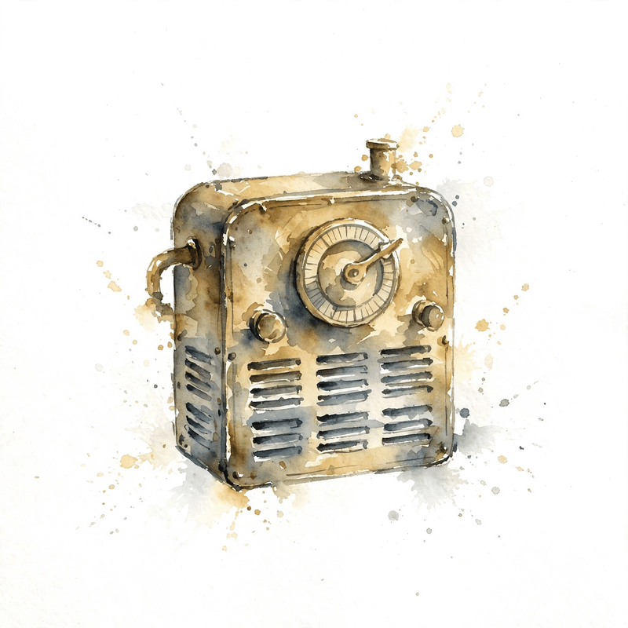

Unit 03 · LLM architecture and generation
The loop, the dials, and the steering wheel
Twelve concepts turn a transformer into a language model and then into a controllable one: the definition triple, MoE, context stretching, temperature, top-k and top-p, greedy versus sampling, prompting, in-context learning, demonstration selection, chain of thought, self-consistency, and the limits of evaluation. Every number below comes from the lesson.
How to read this page. Three tags separate fact from invention.
From the lesson A claim, number, or figure that appears in the lesson source, with its section cited.
Illustration Invented by the companion: an analogy, a toy with values you supply, or a what-if. Never lesson content.
Companion Editorial framing or a transferable principle. The lesson did not say it this way.


An LLM is a triple plus a loop
From the lessonC01 items 2-6
What exactly is the object when someone says the model? The lesson defines it without hype: weights W (numbers), tokenizer T (the string to id map), config C (d, L, h, T_max). The LLM is the triple (W, T, C) plus the sampling code. Nothing more. The runtime is one loop: text to ids (T), forward pass (W, C), logits, sample, ids, text (T). Every LLM application is this loop with different conditioners (prompts) and samplers.
From the lessonC01 items 4, 6
The toy triple: V = 32000, d = 4096, L = 32. Weights in fp16 run about 12 times d^2 times L: 12 times 4096^2 times 32, about 6.4e9 parameters, about 13 GB. The tokenizer table is kilobytes. W holds roughly 1e9 to 1e12 floats in real models, V runs 32k to 200k. Large is about the triple's size, not about understanding. Capabilities are measured, not defined.
From the lessonC01 item 11
The name guarantees nothing. Two triples with the same architecture and size but different data behave differently. LLM names the shape, not the skills.
MoE: most weights sleep per token
From the lessonC02 items 2-5
Capacity costs compute. Can most weights sleep per token? The toy: 8 experts, top-2 routing. Each token wakes 2 of 8 FFNs. The other 6 cost nothing. The router is a bouncer with a guest list of 2: g = softmax(x W_g), keep the top k gates, renormalize, output the weighted sum of the chosen experts. Capacity (total parameters) grows while active compute stays flat at about k/E of dense.
From the lessonC02 items 5-6
Without balancing, the router collapses: one expert gets everything, the rich get richer since chosen experts train faster. The aux loss penalizes the product of the fraction of tokens routed to expert i and the mean gate value: L_aux = E times sum of f_i times P_i, added with a small coefficient. The toy (seed 11, E = 8, d = 16, k = 2) gives gates [0.030, 0.112, 0.087, 0.202, 0.431, 0.086, 0.028, 0.024]. Experts E4 and E3 win, renormalized to [0.681, 0.319]. MoE output norm 2.746 vs dense (all experts) 1.838. The lesson cites Mixtral 8x7B as a public model example: 8 experts, top-2.

From the lessonC02 items 4, 7 Routing bench: top-k renormalization on your gates.
Reproduce the lesson: the defaults give E4 and E3 at 0.681 and 0.319. Then try k = 1 and watch the active fraction fall to 1/8.
From the lessonC02 item 11
Experts do not specialize on their own. Without the aux loss, or with a bad coefficient, experts stay redundant and the model is a slow dense net. Specialization is enforced, not emergent.
Context length: the position fix is easy, the memory is the wall
From the lessonC03 items 2-6
The model trained at 4k tokens. The task needs 128k. What breaks? Three costs: memory (T^2 scores, T cache), compute (T^2 d), and position codes (unseen RoPE angles at position 100000 with base 10000). Position interpolation maps position m to m/s for stretch factor s: s = 32 stretches 4k to 128k. Every angle stays inside the trained range, at the cost of local resolution. NTK-aware variants scale the base instead, preserving high-frequency detail. A short fine-tune on long documents teaches the model the new scale.
From the lessonC03 item 6
The wall is memory. Attention scores at T = 128k, d = 4096, h = 32, fp16: 32 times 128k^2 times 2 bytes = 1 TB per layer. The position fix is the easy part. That number is why long context needs kernels, not just interpolation.
From the lessonC03 item 6 Memory wall bench: score bytes per layer on your T, h, and dtype.
Reproduce the lesson: T = 131072, h = 32 gives 1 TB. Then try the lab: T = 32768, h = 8 gives 16 GiB.
From the lessonC03 item 11
Stretched context does not reason like trained context. Lost in the middle: models use the start and end of long contexts better than the middle. Length is not comprehension.
Temperature: the volume knob on decisiveness
From the lessonC04 items 2-6
The logits are fixed. How do you make the model more daring or more careful without retraining? Divide by T, then softmax. The toy logits [3, 1, 0, -1] stand for [the, a, an, zebra]. T below 1 turns the volume down: the winner takes more. T above 1 turns it up: everyone gets a share. T = 1 changes nothing. The limits are exact: as T nears 0 the distribution goes one-hot on the argmax (greedy), as T grows large it goes uniform.
From the lessonC04 item 6
The lesson computes three distributions. T = 0.5 gives [0.979, 0.018, 0.002, 0.000], entropy 0.110. T = 1.0 gives [0.831, 0.112, 0.041, 0.015], entropy 0.595. T = 2.0 gives [0.579, 0.213, 0.129, 0.078], entropy 1.110. Entropy rises monotonically with T.


From the lessonC04 items 4-5 Temperature bench: the lesson's softmax(z / T) on your logits.
Reproduce the lesson: the defaults at T = 0.5, 1.0, 2.0 give entropies 0.110, 0.595, 1.110. Push T to 5 and watch the zebra rise.
From the lessonC04 item 11
Higher T does not mean more creative and still coherent. Temperature without truncation is a common source of confident nonsense: the tail fires, the facts scatter.
Top-k and top-p: the bouncer with a list
From the lessonC05 items 2-6
Temperature flattens the tail but never removes it. How do you forbid the junk outright? Truncation is a bouncer with a list. Top-k: the list has k names, always. Top-p: the list holds enough names to cover mass p, however many that takes. Both renormalize after the cut. The toy: base top-3 [0.6082, 0.2238, 0.0823]. Top-k = 3 gives [0.6652, 0.2447, 0.0900]. Top-p = 0.9 keeps 3 here, identical [0.6652, 0.2447, 0.0900]. They coincide on this toy and differ when the mass concentrates differently. Apply after temperature, before sampling.
From the lessonC05 items 5, 9
Top-p adapts: sharp distributions keep few tokens, flat ones keep many. Sorting costs O(V log V) per step, fine at V near 1e5. One caution: the cut changes the distribution the model was trained on. Mild truncation is safe. Aggressive truncation distorts.
From the lessonC05 item 11
Truncation does not only remove junk. At top-p = 0.5 on a flat distribution, valid continuations get cut and the model repeats itself. The safety rail becomes a cage.
Greedy is safe. Sampling is alive.
From the lessonC06 items 2-6
If the top token is most likely, why ever sample anything else? The toy distribution [0.831, 0.112, 0.041, 0.015] (T = 1 from C04) answers: greedy always picks token 0, sampling picks token 0 with 83% and explores otherwise. Argmax is the safe road: deterministic, highest-probability, dull. Sampling is the side roads: diverse, risky, sometimes brilliant. Open generation needs side roads. Closed tasks like math and code tests usually want the safe road.
From the lessonC06 items 5-6, 11
Greedy fails by repetition: the model walks into a high-probability cycle, the the the. Sampling fails by tail junk. The lesson prices the toy: greedy pick probability 1.000, sample entropy 0.595 nats at T = 1. That entropy is the diversity budget. And greedy does not give the most likely sequence: it is locally optimal per token, while the globally most likely sequence needs search. Token-greedy is not sequence-optimal.
Prompting: a steering wheel, not an engine
From the lessonC07 items 2-6
The weights are frozen. How does text before the question change the answer? The toy: Translate to French: hello vs hello. The first conditions P(y | x) on a task frame. The second leaves the distribution unsteered. The lesson's numbers: P(Bonjour | hello) = 0.02 vs P(Bonjour | Translate to French: hello) = 0.91. Illustration The lesson marks this toy illustrative, not measured. The frame moves 89 points of probability mass. That is the entire mechanism in one number.
From the lessonC07 items 3-5, 9
A prompt is a steering wheel, not an engine. System: who the model is. User: the task. The model completes the pattern the prompt sets. Change the pattern, change the distribution. Instruction tuning trains the model to obey common frames. The prompt selects among learned behaviors. Long system prompts are a standing tax: their tokens cost prefill compute and cache on every request.
From the lessonC07 item 11
The steering wheel works for attackers too. Prompt injection: untrusted text in the prompt steers the model against the system instruction. The frame is powerful in both directions.
ICL: learning with no gradients
From the lessonC08 items 2-6
Can the model learn a task from examples in the prompt, with zero weight updates? The toy: eng: hello -> fra: bonjour, eng: cat -> fra: chat, eng: dog ->. The model continues the pattern with chien. The examples define the input-output mapping in context. The model infers the function and applies it. No gradients flow. The learning is all in the forward pass. The leading account is implicit Bayesian inference: the prompt evidences a latent task, and the forward pass approximates the posterior predictive. The lesson calls it a useful lens, not a theorem.
From the lessonC08 items 6, 9, 11
With 0 shots the model guesses the task. With 3 shots the format locks. Returns diminish past about 8 shots on simple tasks, a reported pattern that varies by task. Each shot costs tokens, so ICL is sample-efficient but token-hungry per request. And the model is sensitive to example order and label noise in ways training is not. Learning overstates it. Call it conditioning, and test order robustness.
Demonstration selection: near is not enough
From the lessonC09 items 2-6
Not all examples are equal. Which k help this query most? The toy: query dog to ?, candidates scored by embedding cosine. Pick the near ones, then check diversity. Toy cosines [0.91, 0.73, 0.45, 0.12] for 4 candidates, k = 2, picks [0.91, 0.73]. Diversity check: if both show the same label, swap in 0.45 with the missing label. The rule is explicit and auditable. Demonstrations are nearest neighbors in task space. Similar examples teach the relevant mapping, diverse examples cover the label space, order biases toward the recent.
From the lessonC09 item 11
Similar does not mean helpful. Near duplicates teach nothing new. The model needs label coverage, not clones. Similarity without diversity fails.
Chain of thought: tokens are compute
From the lessonC10 items 2-6
The model fails multi-step arithmetic in one token. What changes if it may think aloud? The toy: 23 * 17 with steps 20*17=340, 3*17=51, total 391. The intermediate tokens are scratch space. Each generated token is one computation step. Forcing the answer in one token allows one step. Chain-of-thought buys as many steps as tokens. Reasoning is compute, and tokens are the currency. The lesson's accuracy numbers: direct answer on 2-digit multiplication about 30%, with written steps about 85%. Illustration The lesson marks these illustrative, a pattern from the CoT literature, not measured here. The gap is the value of scratch space.
From the lessonC10 items 5, 9, 11
The scratch tokens hold partial results in context, so later tokens condition on them. Errors compound per step, and decomposition helps only when each step is easier than the whole. Cost: k extra tokens per query. And the steps are not faithful reasoning: models produce plausible steps to a wrong answer, or right answers with wrong steps. CoT is a useful trace, not a proof.
Self-consistency: an election over reasoning paths
From the lessonC11 items 2-6
One chain can wander. What if you ask five times and take the majority? The toy: answers [391, 391, 382, 391, 390] give majority 391, three of five. Diverse chains explore different decompositions, and the majority filters one-off errors. It helps when errors are uncorrelated across samples. The Condorcet math: if each chain is right with probability p above 0.5 independently, the majority is right with probability approaching 1 as N grows. The lesson computes p = 0.6, N = 5: majority accuracy = sum over k = 3..5 of C(5,k) 0.6^k 0.4^{5-k} = 0.683. The math shows the gain and its limit. Independence is the lie. The heuristic survives it partially.
From the lessonC11 item 6 Condorcet bench: majority accuracy from per-chain p and N.
Reproduce the lesson: p = 0.6, N = 5 gives 0.683. Try the lab: p = 0.7, N = 3 gives 0.784. Push N to 21 and watch the limit.
From the lessonC11 item 11
Systematic bias breaks the election. If the model is wrong the same way every time, voting confidently picks the wrong answer. Diversity of error is the real requirement.
Evaluation limits: distrust scores without provenance
From the lessonC12 items 2-6
The benchmark score rose 5 points. Did the model get better? The toy: 100 test questions, 30 in the training data. Reported accuracy 90%, decontaminated accuracy 70%. The 20-point gap is the contamination premium. A model that memorized the test set scores 100% and understands nothing. The metric cannot see the difference. Metrics are proxies. Benchmarks measure the benchmark, and the benchmark may be in the training data. Human judgment is the ground truth. Everything else is a shadow.
| Metric | Measures | Misses |
|---|---|---|
| Perplexity | Surprise at the truth | Truth itself, cross-tokenizer meaning |
| Benchmark accuracy | The benchmark | Contamination, real use |
| Automatic overlap | Surface match to reference | Paraphrase, correctness |
From the lessonC12 items 5, 8
Goodhart's law: when a measure becomes a target, it ceases to be a good measure. The hygiene procedure is the product: n-gram overlap vs training data, canary strings, both raw and decontaminated scores reported. If no contamination check ran, the score is provisional.
The playbook
Every lesson on this page, in order. Tap one to return to its chapter.